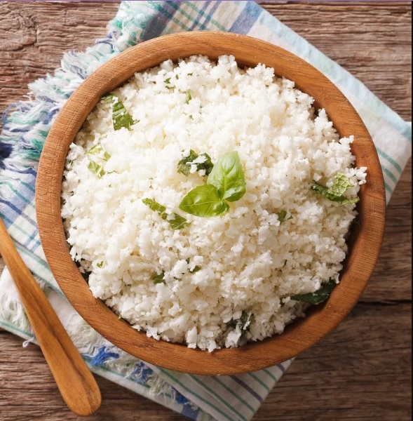
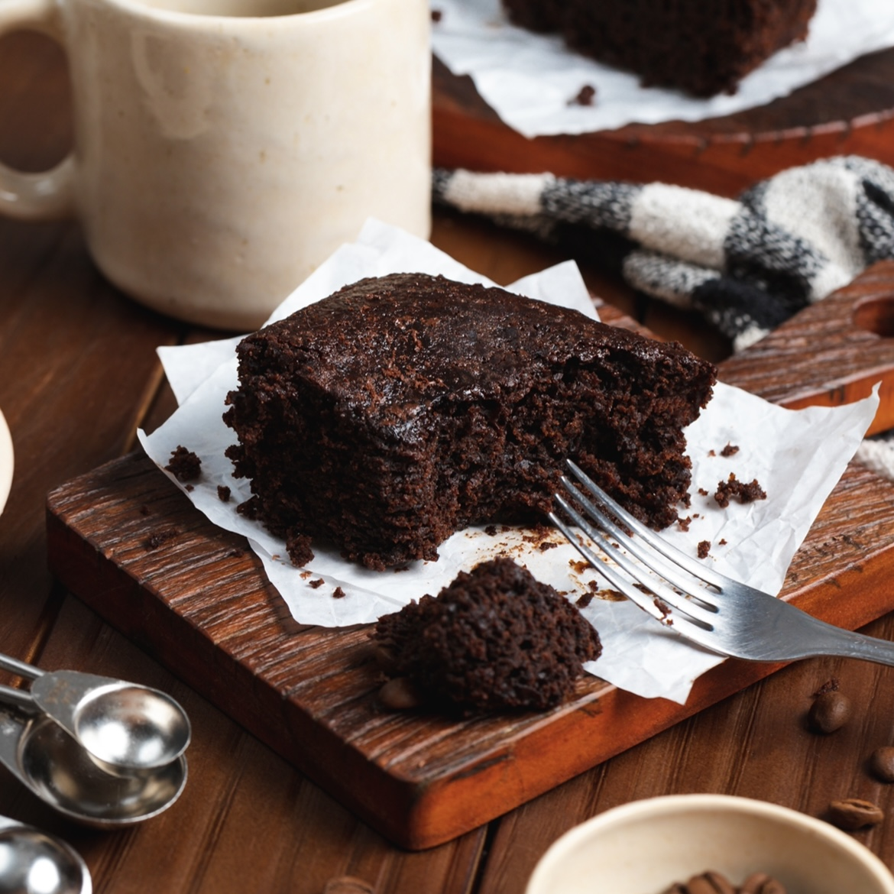
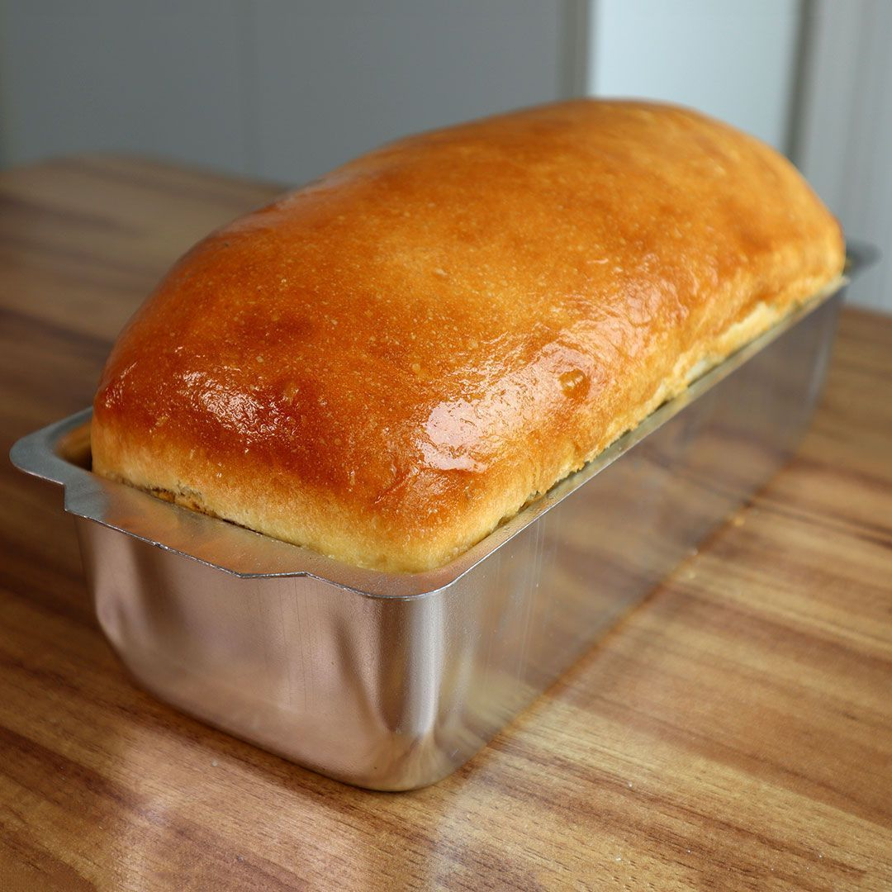

Arroz de Couve-Flor
Ingredientes:
- Arroz
- Couve-flor
- Cebola Média
- Azeite
Modo de Preparo:
Deixe a couve-flor picada. Adicione os ingredientes e refogue bem. Adicional sal, tampe a panela e deixe cozinhar.
Bolo de Café
Ingredientes:
- Farinha
- Açúcar
- Café Coado
- Chocolate em Pó
- Ovos
Modo de Preparo:
Bata o açúcar, as gemas e o café. Adicione farinha e chocolate e mexa bem. Bata as claras e junte a mistura.
Coxinha de Brigadeiro
Ingredientes:
- Leite Condensado
- Chocolaté em Pó
- Manteiga
- Morango
- Chocolate Granulado
Modo de Preparo:
Junte o leite condensado, chocolate em pó e manteiga. Aqueça no fogo baixo. Envolva os morangos e passe no granulado.
Pão Caseiro
Ingredientes:
- Farinha de Trigo
- Sal
- Açúcar
- Fermento
- Água
- Óleo
Modo de Preparo:
Em uma tigela, misture a farinha, o sal e o açúcar. Em outra tigela, dissolva o fermento na água morna e deixe descansar por 10 minutos. Adicione o fermento à mistura de farinha, junto com o óleo, e sove a massa...